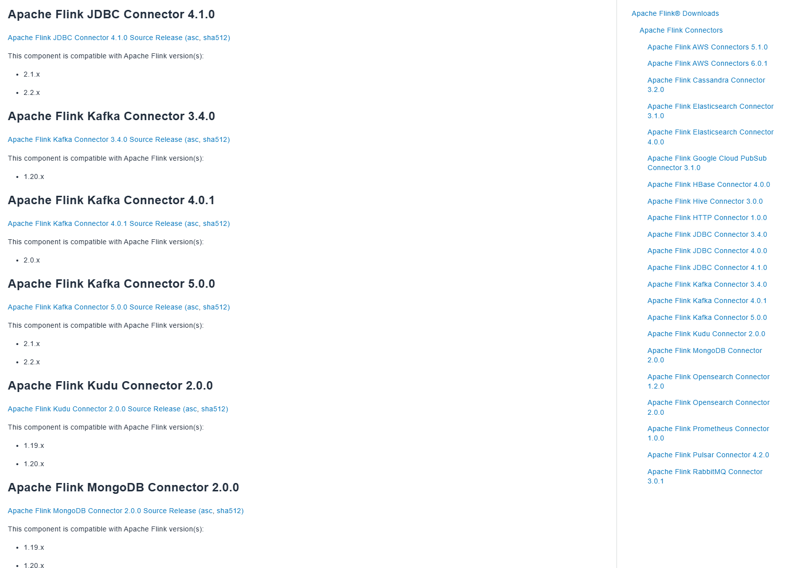
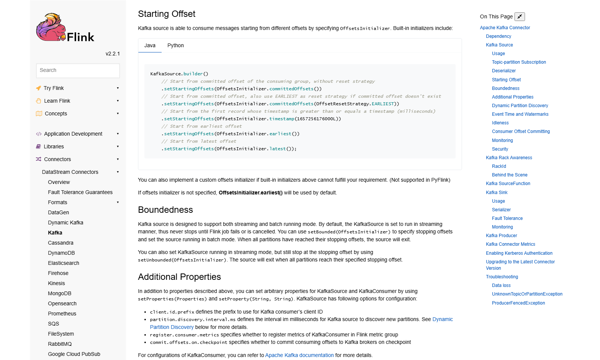
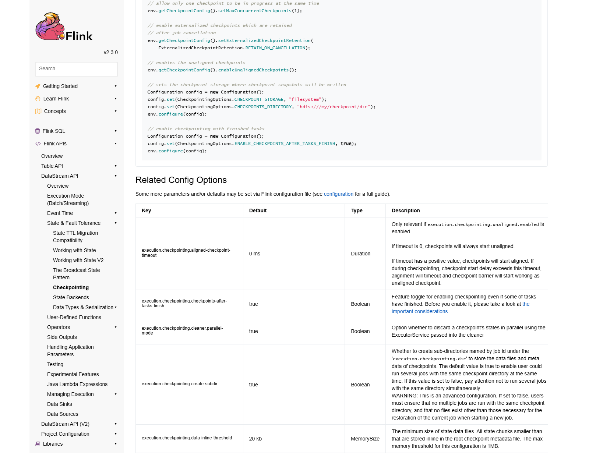

OSS PROJECT INTRO · APACHE FLINK 系列第 4 期：实战场景
这期把前三期的概念全部用进一个真实场景：消费 Kafka 订单流，按分钟统计各店铺成交额写回 Kafka，大屏直接读。你会依次收下四件套：连接器为什么单独发版、版本矩阵怎么查；KafkaSource 的标准构建；事件时间窗口聚合的标准写法；端到端 exactly-once 的完整配置——KafkaSink 事务、事务前缀、超时联动一处不落。最后走一遍反压排查入门：大屏数字开始迟到时，先看哪三个地方。
需求一句话："订单产生后秒级可见，每分钟刷新各店铺成交额，财务对账时一分钱都不能差。"拆开就是四个角色：数据源是 Kafka 的订单主题，下游微服务把每笔订单写成一条 JSON；计算层是 Flink 作业——解析、按店铺分组、一分钟窗口聚合；结果写出回 Kafka 的统计主题，大屏服务订阅它做展示；口径要求是最硬的一条：故障恢复后，每个订单恰好计入一次，不多不少——这就是端到端 exactly-once，从 Kafka 进、到 Kafka 出，整条链路不丢不重。
为什么这个场景值得一期实战？因为它把前三期全部串了起来：消费位点与可重放对应 Checkpoint 的源端要求，分钟窗口与店铺分组对应事件时间与键控状态，"一分钱不能差"对应事务写出的 Sink 要求。做完这条链路，前面所有概念都有了落点。
动手前必须知道的一课：Kafka 连接器不在 Flink 发行包里，官方文档原话是"streaming connectors are not part of the binary distribution"——它作为独立组件单独发版，版本号形如 5.0.0-2.2：主版本是连接器自己的，后缀标明配套的 Flink 线。以 2026-09-30 官网口径：最新连接器是 5.0.0，官方标注配套 Flink 2.1.x 与 2.2.x；2.3 的专用版尚未发布。这是 2.x 双轨期的常态：内核可以追新，连接器必须对矩阵。本期的代码写法对 2.2/2.3 完全一致（KafkaSource/KafkaSink API 未变），动手时按矩阵选坐标即可。

<!-- Maven 依赖：连接器随 Flink 线配套（官方文档原样坐标） -->
<dependency>
<groupId>org.apache.flink</groupId>
<artifactId>flink-connector-kafka</artifactId>
<version>5.0.0-2.2</version> <!-- 后缀 = 配套的 Flink 线 -->
</dependency>来源注记——flink.apache.org/downloads 与官方文档 Kafka Connector 一章（2026-09-30 核对）：连接器不在二进制发行包内、5.0.0 兼容 2.1.x/2.2.x、Maven 坐标均为官方原文；2.3 专用连接器截至核对日尚未发布。
读 Kafka 的官方姿势是 KafkaSource.builder()，五件事一次说清：连哪个集群（bootstrap servers）、读哪个主题、消费组叫什么、从哪个位点起步、消息怎么反序列化。下面的写法逐字对照官方文档示例——从消费组已提交位点起步、没有提交记录就从最早位点开始：
KafkaSource<String> source = KafkaSource.<String>builder()
.setBootstrapServers("kafka:9092")
.setTopics("orders") // 订单主题
.setGroupId("dashboard-job") // 消费组
.setStartingOffsets(
OffsetsInitializer.committedOffsets(
OffsetResetStrategy.EARLIEST)) // 无提交则从头
.setValueOnlyDeserializer(new SimpleStringSchema())
.build();
env.fromSource(source,
WatermarkStrategy.noWatermarks(), "orders-source");
位点起步策略值得多说一句：大屏作业重启后想"从上次停的地方继续"，就用已提交位点；想"重放全天历史重新算"，切 earliest 就行。可重放正是 exactly-once 的源端前提——第 3 期讲过"sources must be replayable"，Kafka 按 offset 回溯就是这句话的兑现。
核心代码一步到位。订单时间戳取"下单时刻"（事件时间），配第 3 期讲过的乱序容忍水位线；按店铺 ID 分组后开一分钟滚动窗口，增量聚合只保留中间值：
orders
.map(json -> parse(json)) // JSON 转 Order 对象
.assignTimestampsAndWatermarks( // 事件时间 + 乱序容忍 5 秒
WatermarkStrategy.<Order>forBoundedOutOfOrderness(Duration.ofSeconds(5))
.withTimestampAssigner((o, ts) -> o.getEventTime()))
.keyBy(Order::getShopId) // 按店铺分组
.window(TumblingEventTimeWindows.of(Time.minutes(1)))
.aggregate(new SumAmountAgg()) // 增量累加成交额
.print(); // 先打印验证，再换 Sink三个工程细节值得圈出来：第一，解析和取时间戳在 keyBy 之前，数据量最大的地方少做分发；第二，窗口触发由水位线驱动，"分钟窗口"的分钟是下单时刻的分钟，不是数据到达的分钟——这就是第 1 期说的"口径由协议保证"；第三，aggregate() 增量聚合让窗口状态只有一个中间值，量级再大也不慌。
"一分钱不能差"落在配置上就是四道闸，少一道口径就破。第一道，Checkpoint 打开——第 2 期那行 enableCheckpointing(10000) 是一切的前提；第二道，源端可重放——Kafka 按消费位点回溯，上一节已经就位；第三道，Sink 走事务——KafkaSink 用 Kafka 事务写统计主题：作业恢复时，未提交事务里的"半截数据"会被 broker 丢弃，下游只看到完整结果；第四道，下游读已提交——大屏服务的消费者把 isolation.level 配成 read_committed，才不会读到恢复期间被回滚的数据。
KafkaSink<String> sink = KafkaSink.<String>builder()
.setBootstrapServers("kafka:9092")
.setRecordSerializer(KafkaRecordSerializationSchema.builder()
.setTopic("order-stats").setValueSerializationSchema(jsonSchema).build())
.setDeliveryGuarantee(DeliveryGuarantee.EXACTLY_ONCE) // 事务写
.setTransactionalIdPrefix("order-stats-dashboard") // 全局唯一前缀
.build();两处联动别漏：官方要求生产者的 transaction.timeout.ms 要大于"最长 checkpoint 时长 + 最长重启时长"，否则作业恢复耗时超过事务超时，broker 回滚未提交事务、数据就真丢了（broker 默认事务超时 15 分钟，超长恢复要同步调 broker 端）；事务前缀要在同一 Kafka 集群上全局唯一，两个作业共用前缀会互相干扰事务。另外提醒一句：事务提交跟着 checkpoint 节奏走，下游可见性天然延迟一个 checkpoint 周期——大屏秒级刷新的预期要按"秒级 + 一次快照间隔"来设。

来源注记——官方文档 Kafka Connector（release-2.2 文档口径，2026-09-30 核对）：DeliveryGuarantee 三档、EXACTLY_ONCE 必须开 checkpoint 且必须 setTransactionalIdPrefix、事务超时须大于 checkpoint 与重启时长之和、下游需 read_committed 均为官方原文；Checkpoint 配置出自 2.3 文档。
大屏数字开始迟到，十有八九是反压（backpressure）：下游算子消费不动，压力沿数据流逆向传导到源头。官方的判定标准很物理——任务没有可用的输出缓冲区，即处于反压状态。排查三步走：
来源注记——nightlies.apache.org 2.3 文档 Ops / Monitoring Back Pressure（2026-09-30 核对）："back pressure is judged based on the availability of output buffers"、OK/LOW/HIGH 三档阈值、busy/backpressured/idle 三指标每秒合计约 1000ms 均为官方原文。
每题点击选项立即反馈 · 共 3 题
1. Flink 2.3 的作业要接 Kafka，连接器版本怎么选？
2. 端到端 exactly-once 配置里，setTransactionalIdPrefix 的作用是？
3. Web UI 里某算子 backpressured 时间占比 70%，说明什么？
把"慢一拍"拆成四段，逐段定性。第一段，乱序容忍：水位线 = 最大观测事件时间减容忍度，容忍设 5 秒，窗口就晚关约 5 秒——这段可以压（改小容忍），但压过头迟到数据赶不上窗口，口径开始漏单。第二段，窗口本身：一分钟窗口意味着分钟内前半段的订单要等后半段才出数，平均半分钟——想更快出数可以缩短窗口或加"预聚合 + 更新流"，但分钟口径本身是需求，不该动。第三段，checkpoint 间隔与事务提交：事务型 Sink 在 checkpoint 完成时才向 Kafka 提交事务，下游 read_committed 之后才可见——间隔设 10 秒，平均可见性就多约 5 秒；这段可以压（调小间隔），但快照背靠背会挤占计算，官方默认"同时只允许一个快照"会开始排队。第四段，集群余量：有反压时以上每段都被拉长，这段不但要压，而且必须压——提并行度、治倾斜。结论：第一、三段是"口径换延迟"的旋钮，调之前先跟运营确认容忍度；第二段是需求本身的形状；第四段是必须消灭的病。exactly-once 的代价从来不是免费的，但它的每一笔开销都花在"一分钱不能差"上——预算花在哪，取决于业务真正怕什么。另外可以给运营一个安慰：大屏展示端可以用"上一分钟值 + 最新快照值"双行展示，口径不破，观感先行。
"算重"二字是题眼：窗口本身不会凭空重算，重复必然来自"同一批数据被消费/写入两次"。定位链从最常见往下排。第一嫌疑：分区扩容 + 旧消费组位点语义。Kafka 分区扩容后，新分区没有已提交位点，若起点策略配了 committedOffsets 却没给重置策略（OffsetResetStrategy），新分区可能从默认位置重复消费一段历史——重建环境复现，用消费组的 lag 与位点数据核对扩容时刻前后的消费区间。第二嫌疑：时间戳正确的窗口进了两条同一订单。上游重试导致同单双写（同一 orderId 两条 JSON），事件时间相同、窗口相同，聚合自然翻倍——这在扩容前可能被乱序容忍"碰巧"掩盖，量一上来就显形。验证法：按 orderId 在源流侧做键控去重（状态 TTL 控制成本），或聚合前对业务主键幂等。第三嫌疑：非事务 Sink 加频繁重启。若这期作业当时还在用 AT_LEAST_ONCE 或裸写（DeliveryGuarantee.NONE），大促抖动引发重启，重放区间内的数据会被再写一遍——检查 DeliveryGuarantee 与 Checkpoint 页签的失败记录即可证实。定位的方法论：先在 Sink 侧量化重复面（哪些店铺、哪个时间窗、差值是否等于某段区间的总量），再回源侧对区间找交集——"下游描述症状、上游找证据"，永远比在整条链路上盲猜快。顺带的工程启示：分区数是大促容量规划的一部分，扩容演练要在平时做，别在零点第一次做。
带走这五句话：
下期预告：第 5 期《架构与源码导读》（收官）——flink-runtime 模块地图，跟着一次 Checkpoint 从 JobManager 触发、barrier 流动到状态落盘走完全程，状态后端接口抽象，最后给 Java 工程师一条四周读码路线。
Primary source：Apache Flink 官方文档 2.3（nightlies.apache.org）——本期连接器口径、KafkaSource/KafkaSink 写法、exactly-once 四道闸与反压判定均出自官方文档 Connectors / Ops 章节（Kafka 连接器文档为 release-2.2 线口径，v2.3.0 内核，2026-09-30 核对）。